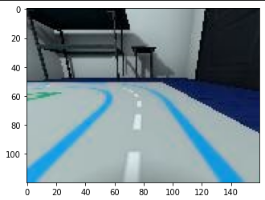
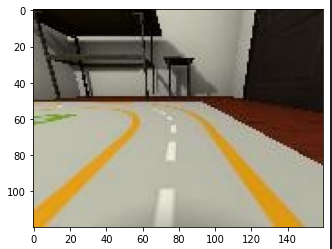
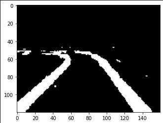
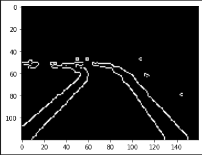
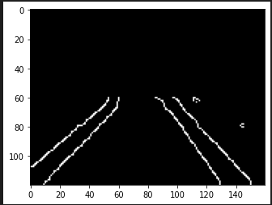

<!DOCTYPE lake>
<p data-lake-id="u40adf75d" id="u40adf75d"><span data-lake-id="u931d4b45" id="u931d4b45">参考地址：</span><a data-lake-id="udf2dd321" href="https://github.com/tawnkramer/gym-donkeycar" id="udf2dd321" rel="noopener noreferrer" target="_blank"><span data-lake-id="u90501470" id="u90501470">https://github.com/tawnkramer/gym-donkeycar</span></a></p><p data-lake-id="u4ba05e89" id="u4ba05e89"><span data-lake-id="uf9fc52a5" id="uf9fc52a5">​</span><br/></p><h2 data-lake-id="jQM7l" id="jQM7l"><span data-lake-id="ubeadd50e" id="ubeadd50e">环境安装</span></h2><span class="yuque-card-unsupported">[codeblock]</span><h2 data-lake-id="zFZSz" id="zFZSz"><span data-lake-id="u652776ca" id="u652776ca">启动模拟器</span></h2><p data-lake-id="u90afba3f" id="u90afba3f"><span data-lake-id="u1ea26abd" id="u1ea26abd">场景地图名称：</span></p><span class="yuque-card-unsupported">[codeblock]</span><p data-lake-id="ue8be80cf" id="ue8be80cf"><span data-lake-id="u9ff1cfd4" id="u9ff1cfd4">模拟器启动环境如下</span></p><span class="yuque-card-unsupported">[codeblock]</span><p data-lake-id="udfd3b38f" id="udfd3b38f"><span data-lake-id="ud48e6b6e" id="ud48e6b6e">其中obs为当前画面，它的颜色顺序为RGB,如果想在opencv里面显示，需要将它的颜色改为BGR</span></p><p data-lake-id="uc4efed69" id="uc4efed69"></p><span class="yuque-card-unsupported">[codeblock]</span><p data-lake-id="u0a14056c" id="u0a14056c"></p><p data-lake-id="u8f329d61" id="u8f329d61"><br/></p><h2 data-lake-id="OlrPo" id="OlrPo"><span data-lake-id="ub8e78e1b" id="ub8e78e1b">颜色过滤</span></h2><p data-lake-id="u99bc9edc" id="u99bc9edc"></p><span class="yuque-card-unsupported">[codeblock]</span><p data-lake-id="u9a8be6ea" id="u9a8be6ea"><br/></p><h2 data-lake-id="WL9zp" id="WL9zp"><span data-lake-id="u561186f1" id="u561186f1">边缘检测</span></h2><p data-lake-id="u5fa4bece" id="u5fa4bece"></p><span class="yuque-card-unsupported">[codeblock]</span><p data-lake-id="uba8901b7" id="uba8901b7"><br/></p><h2 data-lake-id="QE9tN" id="QE9tN"><span data-lake-id="u3c1e0ea3" id="u3c1e0ea3">感兴趣区域提取</span></h2><p data-lake-id="uc9c3de87" id="uc9c3de87"></p><span class="yuque-card-unsupported">[codeblock]</span><p data-lake-id="u731d7348" id="u731d7348"><br/></p><h2 data-lake-id="yJmCe" id="yJmCe"><span data-lake-id="ucdbbd419" id="ucdbbd419">查找线段</span></h2><h3 data-lake-id="VOI6I" data-lake-index-type="2" id="VOI6I"><span data-lake-id="u66d356bb" id="u66d356bb">霍夫直线</span></h3><span class="yuque-card-unsupported">[codeblock]</span><h3 data-lake-id="DFSsE" data-lake-index-type="2" id="DFSsE"><span data-lake-id="ue5730ddc" id="ue5730ddc">线段聚类</span></h3><span class="yuque-card-unsupported">[codeblock]</span><h3 data-lake-id="nq9Qq" data-lake-index-type="2" id="nq9Qq"><span data-lake-id="u3c6d64e5" id="u3c6d64e5">过滤离群值</span></h3><span class="yuque-card-unsupported">[codeblock]</span><h3 data-lake-id="OH3U6" data-lake-index-type="2" id="OH3U6"><span data-lake-id="u1d8766a2" id="u1d8766a2">生成一条线段</span></h3><span class="yuque-card-unsupported">[codeblock]</span><p data-lake-id="u1ea29e44" id="u1ea29e44"><br/></p><h2 data-lake-id="O4aIy" id="O4aIy"><span data-lake-id="u4af13f0f" id="u4af13f0f">巡线控制</span></h2><h3 data-lake-id="TVHRf" data-lake-index-type="2" id="TVHRf"><span data-lake-id="ua5da8280" id="ua5da8280">识别到两条线</span></h3><span class="yuque-card-unsupported">[codeblock]</span><h3 data-lake-id="mMzu1" data-lake-index-type="2" id="mMzu1"><span data-lake-id="uf966dfd1" id="uf966dfd1">仅识别到右侧线</span></h3><span class="yuque-card-unsupported">[codeblock]</span><h3 data-lake-id="bfqtY" data-lake-index-type="2" id="bfqtY"><span data-lake-id="u4456e171" id="u4456e171">仅识别到左侧线</span></h3><span class="yuque-card-unsupported">[codeblock]</span><h3 data-lake-id="XlcHJ" data-lake-index-type="2" id="XlcHJ"><span data-lake-id="u694ace56" id="u694ace56">角度换算</span></h3><span class="yuque-card-unsupported">[codeblock]</span>